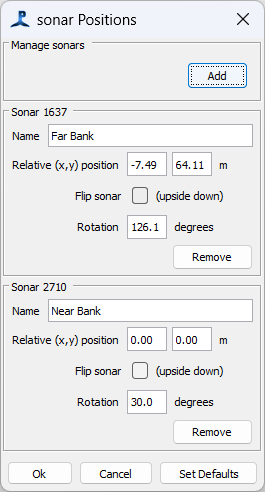

For some internal calculations and display purposes, it's useful to know the absolute sonar positions. These are entered as positions relative to the coordinates of the first hydrophone streamer configured in the PAMGuard array manager.
To set the sonar coordinates, from the PAMGuard settings menu select 'Tritech Acquisition>Sonar positions ...'

In the dialog, you should see a panel for each sonar that's been detected by the system. For each, enter the absolute coordinates in metres and as a clockwise rotation and whether the sonar is mounted upside down. (support for other orientations may be added later). You can also give the sonars a name, which will appear on the sonar display.
Absolute position data may also be needed by other modules using sonar data.
Absolute positions are not stored in data files, which continue to store data purely in terms of angle and distance for each detection point.